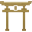
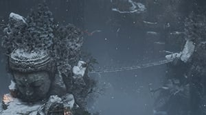

 Ashina Reservoir
The starting point of the game, where Sekiro attempts to free Kuro from Genichiro.
Dilapidated Temple
A ruined Buddhist Temple that acts as a safe haven for The Sculptor, Sekiro, and several others who wander the land.
Ashina Outskirts
The grounds of Ashina Castle are guarded by powerful foes and their leader Gyoubu the Demon. A giant Serpent also roams the nearby valley.
Hirata Estate
It is the Dragonspring year, and thieves attack the Hirata Estate just as its warriors are far away. Protect your master at all costs
Ashina Castle
Ashina Castle is heavily guarded by skilled Samurai and aggressive Tengu Ops, who will protect Genichiro Ashina's domain.
Abandoned Dungeon
The dark and flooded caverns of the Abandoned Dungeon hide away the unholy surgical techniques of the Ashina clan, and summon fearful spirits.
Senpou Temple, MT. Kongo
The monks of Senpou Temple have abandoned the path to Englightenment and desecrated the halls of Buddha, corrupted by their search for immortality and the Rejuvenating Waters.
Sunken Valley
 The cliffs surrounding Ashina Castle are guarded by fearless and keen-eyed musketeers, but they are not all that threatens would-be intruders.
Sunken Valley Passage
The Boddhisatva Valley falls into decay as stagnant pools slowly corrupt its roots, and the local wildlife twists to adapt to the new and hostile environment.
Ashina Depths
The poison flowing from Ashina Depths is behind the corrosion of the entire Valley, and is guarded by fearsome Giant Apes.
Mibu Village
Deep within Ashina, immortal villagers tend to unseen crops, stagnating in their corrupted eternal life
Fountainhead Palace
Through the beautiful Celestial Palace flow the waters of life. But despite appearances, its essence corrupts the mortals who come in touch with it.